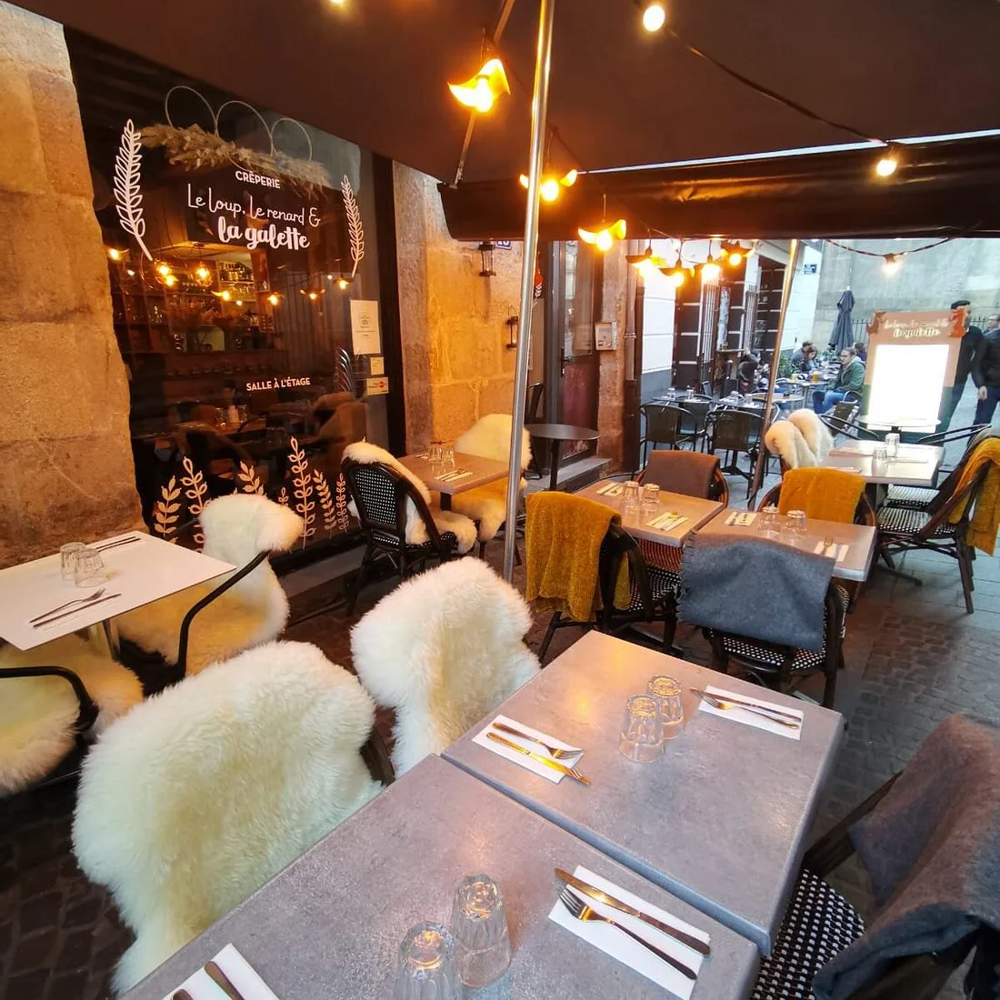
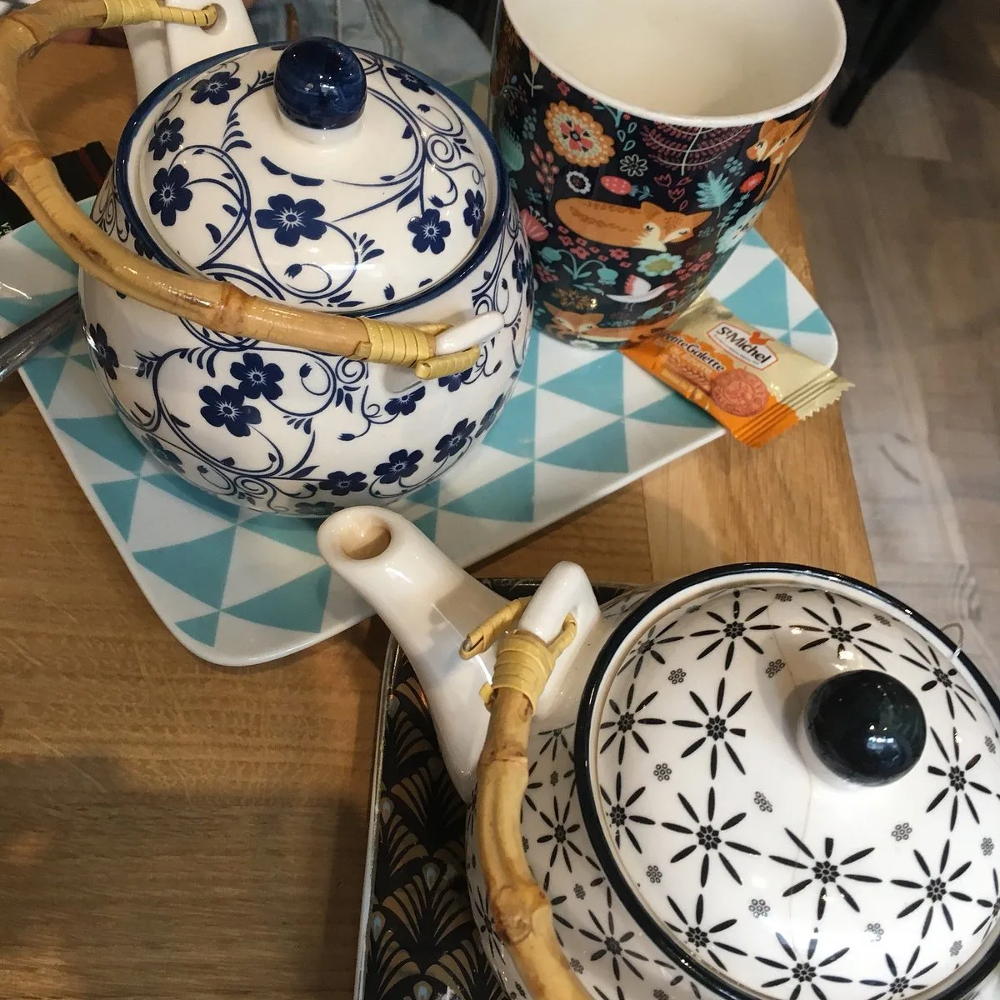
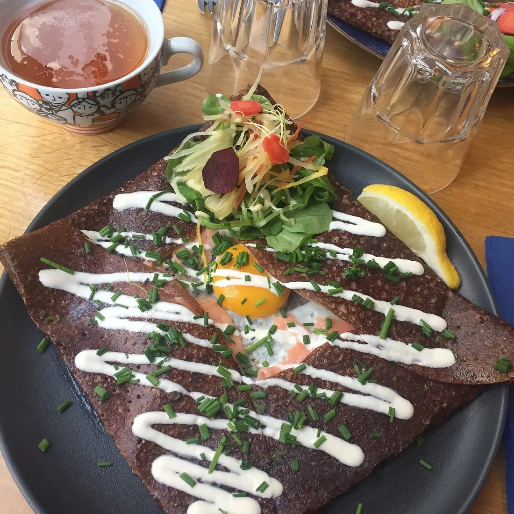
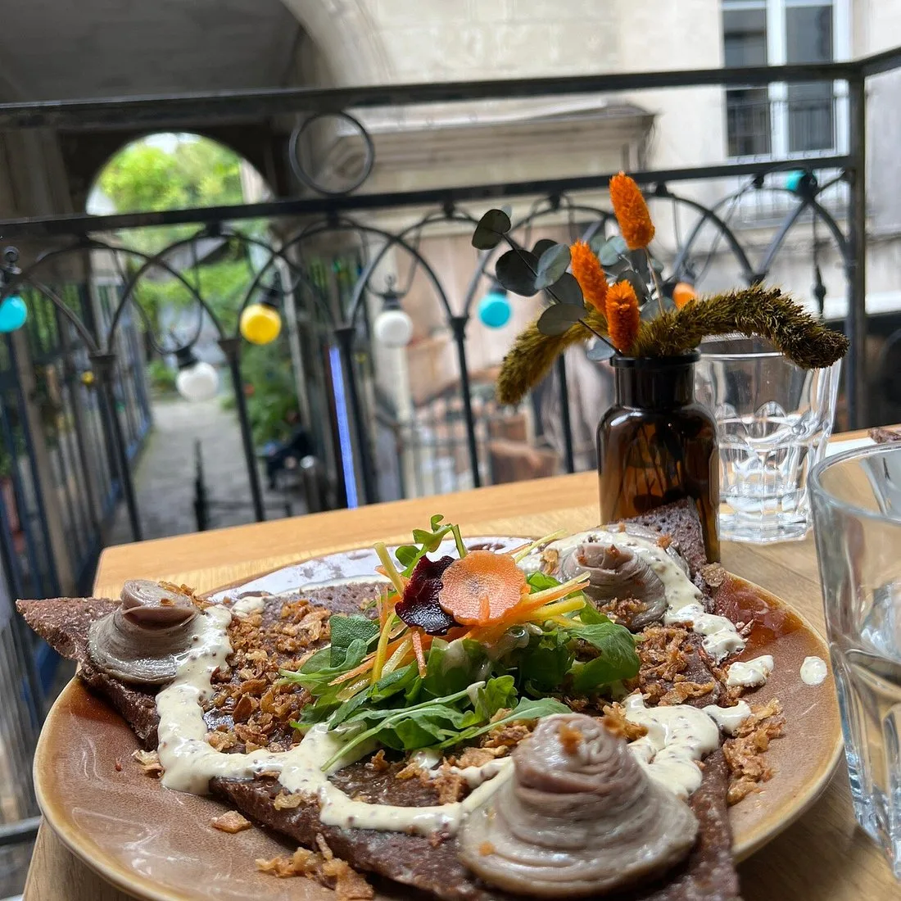
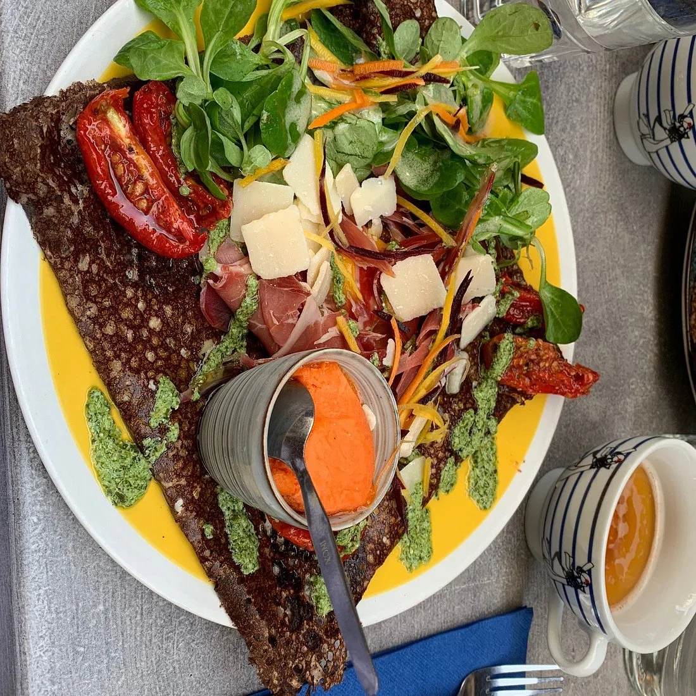
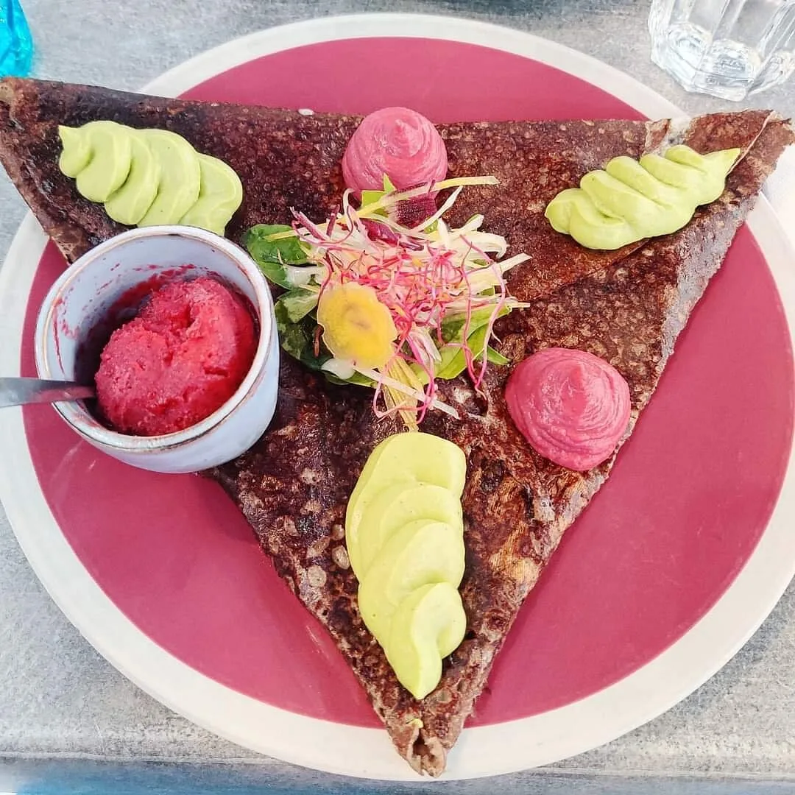
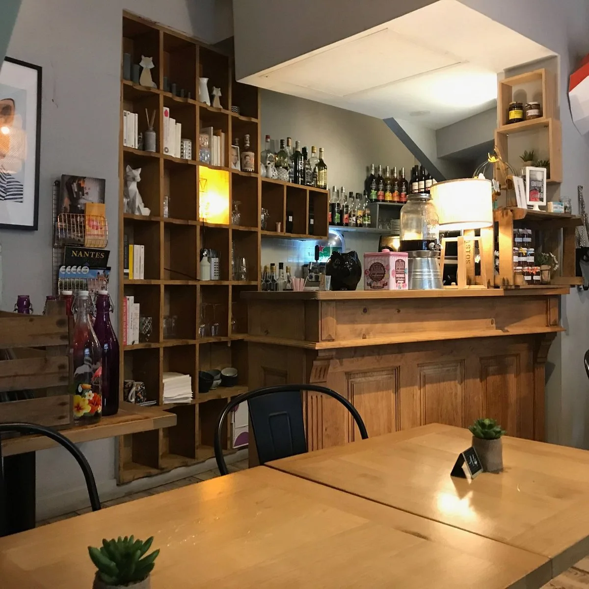
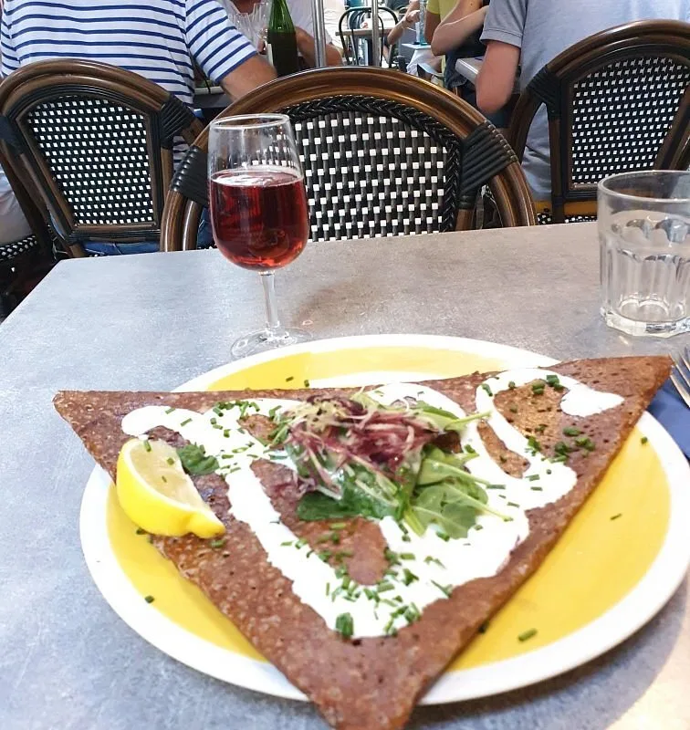

Crêperie · Bouffay · Nantes
Le Loup, le Renard & la Galette
Des galettes de sarrasin créatives, nommées comme des personnages de fable, servies sous les guirlandes de la rue de la Juiverie.
Médaille d'argent 2020 du meilleur crêpier de France
Au cœur du Bouffay, entre les façades de pierre et les pavés, une vitrine peinte à la main annonce la couleur : ici, le loup et le renard se sont mis d'accord autour d'une galette.
Le sarrasin est bien cuit, dentelle croustillante sur les bords. Les recettes portent des noms d'animaux et de personnages — et chacune raconte quelque chose. En 2020, la maison a reçu la médaille d'argent du meilleur crêpier de France.
En bas, le comptoir, les casiers de bois et les théières dépareillées. En haut, la salle à l'étage, comme l'annonce la vitrine. Dehors, la terrasse aux peaux de mouton, sous les guirlandes.

Des galettes qui n'ont pas peur du feu.
Sarrasin sombre, bords en dentelle, dressages francs : œuf bio, fromages affinés, légumes croquants, sauces maison. Rien de timide.




Ici, la galette est toujours au féminin.
Même quand elle s'appelle La Loup.
Chaque galette signature est un personnage. On ne commande pas un plat — on convoque quelqu'un à sa table.
-
Ossau-Iraty, spianata piccante, crème de poivrons, œuf bio, jeunes pousses, copeaux de parmesan, piment d'Espelette.
-
Chèvre, saumon fumé, jeunes pousses, crème fraîche, ciboulette, citron frais.
-
Crémeux de butternut, œuf bio, sauce yaourt-tahini, feta, pousses d'épinards, amandes effilées, vinaigrette à l'orange.
-
Chèvre, pommes confites, chiffonnade de coppa, oignons confits, miel, oignons frits, crème fraîche, vinaigrette à l'orange.
-
Bacon, camembert, pommes de terre, œuf bio, oignons confits, jeunes pousses, oignons frits.
-
Émincés de poulet aux épices marocaines et citron confit, cheddar, pommes de terre, sauce yaourt-tahini, amandes effilées.
-
Andouille de Guémené, camembert, pommes cuites, oignons confits, sauce moutarde à l'ancienne, oignons frits.
-
Sardines bretonnes en rillettes maison — cream cheese, citron vert, échalotes, piment d'Espelette —, tapenade de tomates séchées, guacamole, huile d'olive et glace wasabi.
Le bestiaire complet vit sur la carte, en salle — avec La Cueillette, La Crazy Avocado, L'Augustine, La Rosie et La Fat West. Prix relevés en vitrine, à confirmer en salle.

Une salle en bas,
une salle à l'étage,
une terrasse sous les guirlandes.
Bois blond, murs gris-bleu, bouteilles de sirop alignées comme des livres. L'hiver, la terrasse se couvre de peaux de mouton et de plaids moutarde ; l'été, elle regarde passer la rue de la Juiverie.

Les complètes
- La Complète œuf bio, emmental, jambon blanc supérieur9,00
- Complète oignons confits9,50
- Complète crème fraîche9,50
- Complète champignons frais9,50
- Complète camembert10,00
- Complète chèvre10,00
- Complète coppa10,00
- Complète andouille de Guémené11,00
- La Super Complète13,00
- Super Complète saumon fumé13,50
- Super Complète andouille12,50
- Galette beurre3,50
- Bol de salade3,00
Les crêpes signatures
- La Popeye ganache chocolat, glace lait de coco, chocolat fondu, coco râpée, crème fouettée9,00
- La Prosper fondant au chocolat, confiture d'orange, glace pain d'épices9,00
- La Cookies banane, chocolat fondu, glace vanille-pécan-caramel, cookies de la « Feeling Good Bakery »9,90
Les classiques
- Beurre sucre3,50
- Caramel beurre salé5,00
- Chocolat5,00
- Citron / sucre5,00
- Miel4,50
- Crème de marron5,50
- Pommes confites5,50
- Pommes / glace caramel7,00
Formule du midi
14 €
1 complète au choix + 1 crêpe (beurre sucre, caramel beurre salé, chocolat ou citron sucre) + 1 verre de cidre ou jus de pomme bio.
Hors week-end et jours fériés.
Formule marmaille
11 €
Pour les moins de 12 ans : 1 galette jambon-fromage, jambon-œuf ou œuf-fromage + 1 sirop à l'eau + 1 crêpe beurre sucre ou 1 glace.
Carte relevée sur le panneau en vitrine — prix indicatifs, susceptibles d'évoluer. Boissons, grandes salades et galettes du moment : [À CONFIRMER] en salle.
Horaires
[À CONFIRMER]
Formule du midi servie hors week-end et jours fériés.